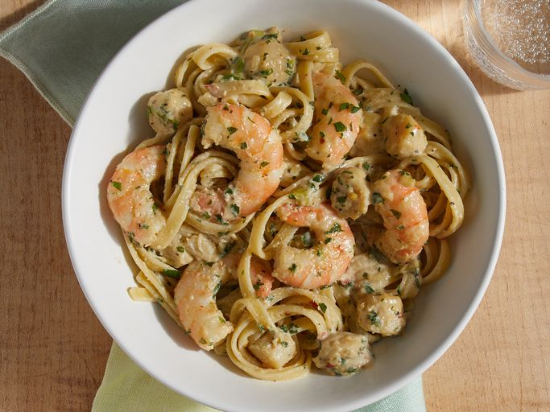

cajun seafood pasta

This delicious seafood pasta dish with shrimp, scallops, and fettuccine pasta is creamy, spicy, and full of flavor!
Bay scallops are preferred, but the larger sea scallops can be used if they are cut in half.
Ingredients:
- 1 pound dry fettuccine pasta
- 2 cups heavy whipping cream
- 1 cup chopped green onions
- 1 cup chopped parsley
- 1 tablespoon chopped fresh basil
- 1 tablespoon chopped fresh thyme
- 2 teaspoons salt
- 2 teaspoons ground black pepper or to taste
- 1 ½ teaspoons crushed red pepper flakes or to taste
- 1 teaspoon ground white pepper or to taste
- ½ pound shrimp, peeled and deveined
- ½ pound scallops
- ½ cup shredded Swiss cheese
- ½ cup grated Parmesan cheese
How to make:
- Fill a large pot with lightly salted water and bring to a rolling boil. Cook fettuccine at a boil until tender yet firm to the bite, about 8 minutes; drain pasta.
- Meanwhile, pour cream into a large skillet. Cook over medium heat, stirring constantly, until just about boiling. Reduce heat and add green onions, parsley, basil, thyme, salt, black pepper, red pepper flakes, and white pepper. Simmer until thickened, 7 to 8 minutes.
- Stir in shrimp and scallops. Cook until shrimp is no longer translucent.
- Stir in cheeses, blending well.
- Serve sauce over pasta.
- Serve hot and enjoy!
Home